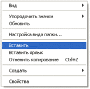

Копирование файлов и папок
Есть несколько способов перемещения файлов и папок в компьютере. Но мы рассмотрим универсальный - тот, которым можно перенести информацию с CD, С диска или ещё откуда либо, записать данные на флешку и с флешки. Также при помощи него можно переписать фото или видео с фотоаппарата (видеокамеры), с мобильного телефона и с других подключаемых к компьютеру устройств.
Перемещение объектов из одного компьютерного места в другое называется копирование. Это такой процесс, при котором мы создаём точную копию данных и отправляем её в другое место.
Пошаговая инструкция
- Щелкните правой кнопкой мышки по объекту, который хотите перенести. В открывшемся списке нажмите на пункт «Копировать».
- После этого нужно открыть на компьютере тот отдел, куда Вы хотите отправить данные. Это может быть Локальный диск D, Документы или любая другая папка, Рабочий стол и даже флешка.
- Затем щелкните правой кнопкой мышки по пустой части (не по какому-то значку, а рядом) и из списка выберите пункт «Вставить».
Вот и всё! Теперь этот объект есть в двух местах: и в том , откуда мы его взяли, и в новом (там, куда перенесли).
Получается следующее:
- Вы открыли место, из которого хотите взять файл (например, флешку).
- Кликнули по нему ПКМ (правой кнопкой мышки), выбрали из списка «Копировать».
- Затем перешли в раздел, куда хотите перенести этот объект (например, Документы).
- Нажали по пустой области ПКМ (правой кнопкой мышки) и выбрали «Вставить».
Копирование нескольких файлов/папок
Для того чтобы сделать копию нескольких файлов (папок), нужно сначала их выделить. Для этого поместите стрелку (курсор) на пустое поле рядом с данными, которые хотите скопировать.
Нажмите левую кнопку мыши и, не отпуская ее, обведите прямоугольником необходимые объекты. Когда они закрасятся цветом, это будет означать, что все они выделены. Отпустите мышку.
А теперь скопируем их. Щелкните ПКМ по любому выделенному значку. Откроется список, из которого нужно выбрать пункт «Копировать».
Затем откройте на компьютере то место, в которое хотите поместить эти данные. Это может быть Локальный диск D, Документы, флешка или какая-то папка.
И, наконец, нажмите ПКМ по пустому полю, и из появившегося списка выберите пункт «Вставить».
Всё! Файлы и папки перенеслись в новое место. То есть они теперь в двух местах: и там, где были изначально, и в новом – там, куда Вы их скопировали.
Не пугайтесь, всё не так сложно, как кажется на первый взгляд. Нужно только чуть-чуть потренироваться. Успехов!